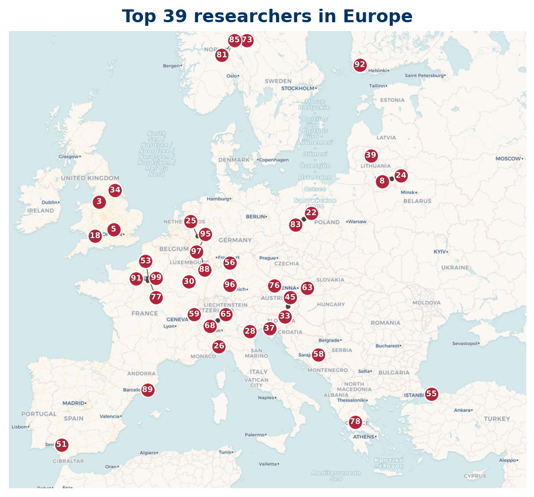

38 researchers are based in Europe; 33 researchers mapped, 5 researchers location not available (institution geocode pending).
Listing
| Rank | Name | Institution | Country |
|---|---|---|---|
| 2 | J. P. Keating | University of Oxford | GB |
| 5 | H. M. Bui | University of Manchester | GB |
| 8 | Nina C. Snaith | University of Bristol | GB |
| 10 | Jörn Steuding | University of Würzburg | DE |
| 29 | Julio Andrade | University of Exeter | GB |
| 34 | J. Washburn | Laboratoire de Psychologie et NeuroCognition | FR |
| 35 | M. A. Korolev | Russian Academy of Sciences | RU |
| 36 | Jerzy Kaczorowski | Adam Mickiewicz University in Poznań | PL |
| 40 | Nobuki Fujimoto | Open Knowledge (United Kingdom) | GB |
| 41 | Christopher Hughes | University of York | GB |
| 42 | R. R. Hall | University of York | GB |
| 44 | Emanuel Carneiro | The Abdus Salam International Centre for Theoretical Physics (ICTP) | IT |
| 45 | Benjamin Wesolowski | École Normale Supérieure de Lyon | FR |
| 46 | Kamel Mazhouda | Centre National de la Recherche Scientifique | FR |
| 47 | Yuri Matiyasevich | St. Petersburg Department of Steklov Institute of Mathematics | RU |
| 51 | Alain Connes | Collège de France | FR |
| 53 | Ramūnas Garunkštis | Vilnius University | LT |
| 54 | Christoph Aistleitner | Graz University of Technology | AT |
| 59 | Christian Weiß | Helmut Schmidt University | DE |
| 60 | Alessandro Languasco | University of Padua | IT |
| 61 | Youness Lamzouri | Centre National de la Recherche Scientifique | FR |
| 64 | Winston Heap | Norwegian University of Science and Technology | NO |
| 69 | Juan Arias de Reyna | Universidad de Sevilla | ES |
| 73 | Stefano Beltraminelli | - | CH |
| 76 | Fernando J.O. Louro | - | PT |
| 77 | Alberto Perelli | University of Genoa | IT |
| 78 | Tosho Lazarov Karadzhov | - | BG |
| 80 | V. Borz | - | IT |
| 81 | Athanasios Sourmelidis | Graz University of Technology | AT |
| 82 | Danilo Merlini | - | CH |
| 83 | Andrew Pearce-Crump | University of York | GB |
| 84 | Michel Balazard | Centre National de la Recherche Scientifique | FR |
| 88 | C. Y. Yildirim | Boğaziçi University | TR |
| 90 | Sergey K. Sekatskii | École Polytechnique Fédérale de Lausanne | CH |
| 91 | P. Moree | Max Planck Institute for Mathematics | DE |
| 93 | Almasa Odžak | University of Sarajevo | BA |
| 95 | Kristian Seip | Norwegian University of Science and Technology | NO |
| 98 | Daniel Fiorilli | Centre National de la Recherche Scientifique | FR |